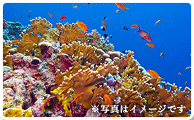
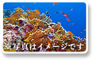

毎日続けられる、自然な環境で取れた 沖縄産天然のサンゴ を使用しています。

沖縄サンゴカルシウムは、
沖縄で採れたサンゴを使い、国内の工場で製造しています。
製造工程では、製造ロットごとに丁寧に検査を行なっています。
防腐剤は採りすぎると、
健康を害する危険性もありますので、使用していません。
沖縄サンゴカルシウムで使用している植物の長命草、甘草は 農薬不使用栽培 です。
毎日続けられる、自然な環境で取れた 沖縄産天然のサンゴ を使用しています。

沖縄サンゴカルシウムは、
沖縄で採れたサンゴを使い、国内の工場で製造しています。
製造工程では、製造ロットごとに丁寧に検査を行なっています。
防腐剤は採りすぎると、 健康を害する危険性もありますので、使用していません。
沖縄サンゴカルシウムで使用している植物の長命草、甘草は 農薬不使用栽培 です。
1日当たりの摂取量はどれくらいですか？
1日3粒～5粒を目安にお召し上がりください。
3粒でカルシウム300ミリグラム、ビタミンDが2.7マイクログラム摂れます。
ただし、栄養素はサプリだけでなく、毎日のお食事からもバランスよく摂取することが大事です。
飲み方はどうすればいいですか？
お水などと一緒に飲んで下さい。
噛んでもお召し上がりいただけます。
小さなお子様や飲みにくいと感じた場合は、砕いてからお召し上がりください。
どのくらい続ければよいですか？
3ヶ月～半年は続けてみて下さい。
実感いただくまでには、個人差がございます。
特に基礎栄養素サプリメントは、長期的に栄養を補助していくものとなります。
継続して摂取していただくことで実感を得る健康食品です。
副作用はありますか？
カルシウムの摂取上限(2500mg,25粒)を超えて摂取しなければ、副作用は特にございません。
万が一、お召し上がり後に体調が優れない場合は、使用を中止して医師にご相談ください。
返品について
返品を承るには、以下の条件がございます。
・商品到着後8日以内にご連絡ください。
※ご連絡なく返品された場合、返金を承れないことがございます。
・返金をお受けできるのは、未開封のものに限ります。
・お客様のご都合による返品の場合、送料はお客様の負担となります。
商品について
商品名： 沖縄サンゴカルシウム
■原材料： 乳化オリゴ糖、還元麦芽糖、硬化菜種油、ボタンボウフウ粉末、乳タンパク分解物（乳成分を含む）／
サンゴカルシウム、キシリトール、香料、甘味料（甘草）、
ビタミンC、ナイアシン、パントテン酸カルシウム、ビタミンB2、
ビタミンB6、ビタミンB1、葉酸、ビタミンD、ビタミンB12
■内容量： 46.5g（500mg×93粒）
■賞味期限： 製造日より2年
支払方法・発送方法について
・本商品は宅配便にてお届けします。
・初めてのご注文の場合、お支払方法を代金引換・カード決済のみに限らせて頂いております。
振込用紙を選択されていた場合は、代金引換にてお送りさせて頂きますので予めご了承下さい。
・決済方法がカード決済または2回目以降お届けの場合は、3袋までゆうメールでのお届けも可能です。
ご希望の場合はお申し込みの際、備考欄にお書き添え下さい
【定期コースのお届けについて】
・定期コースは3回以上のご継続がお約束のコースです。
毎月自動的にお届けいたします。
・お届け日の変更などをご希望の場合は、当店までご連絡くださいませ。